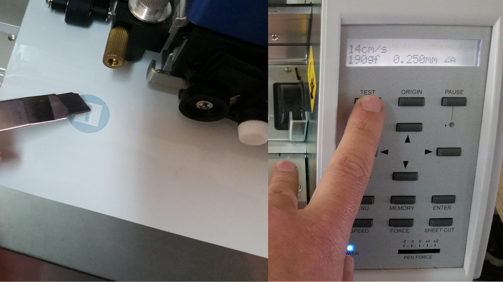
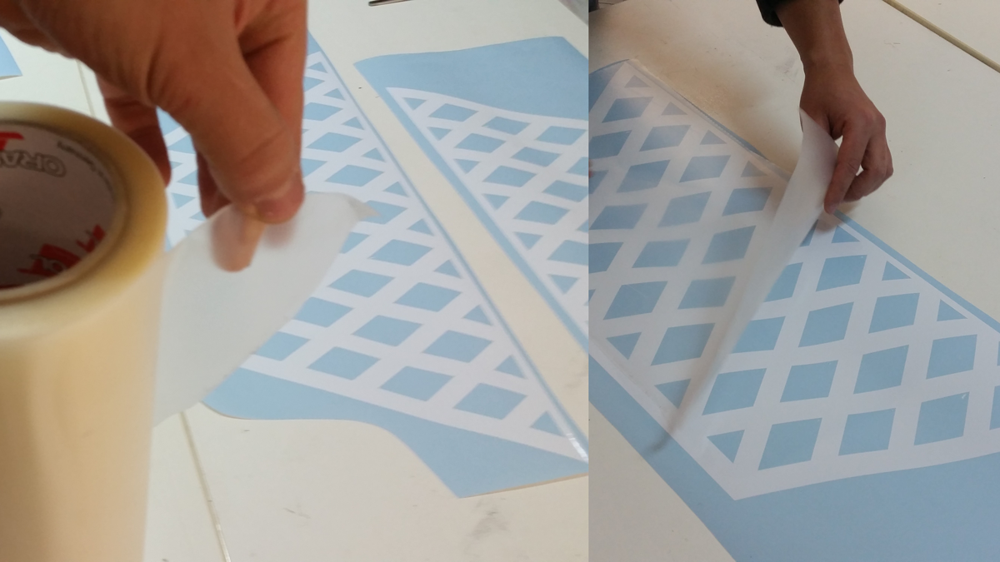
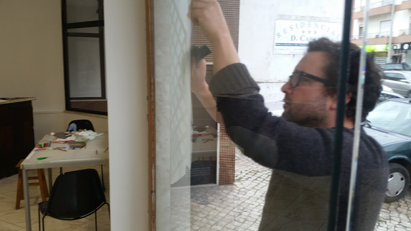

FAB ACADEMY 2017
FAB ACADEMY 2017
Week 3 - Design, Design and Digital Design - Part 1 Vinyl

About the Vinyl
The assignment was clear about the importance of vinyl cutting.
Since it is something that I was already acquainted with, I didn’t add much trouble.
The idea was to make a cool door sign for the new space of the Fab Lab we are installing in Caldas da Rainha.
I started to import the front facade to illustrator from an AutoCad file I made a couple of weeks ago.
After that I designed the layout positioning and dimensioning the main logo sign according to users dimensions and impact.
Cut and Install
Text soon :)
The vinyl was cut on Roland GX-500 and prepared in illustrator.
The cutting paths are sent directly to the machine through a Roland plugin (Cut Studio).
Before o start cutting you have to make sure that you are applying the right amount of pressure and that the velocity of cut doesn’t affect its quality.
That is solved on the machine own interface. There is usually a test button that is used to check if the presets are ok for that type of material. The blade state of conservation is also a variable to be aware of.

The optimisation of the cut should be independent from the composition, since you will have to place the cutting elements on the cutting artboard reasoning between your ability of putting the pieces back together with a little more effort and measurements, or do it directly maintaining the positions, but spending a lot more material.
I usually go for number one!
Once the vinyl is correctly cut you will have to have some patience and remove the excess. The level of detail and size will dictate the time you spend on this task. Bring a cup of tea and a nice partner to chat and help you with this part of the job.
After these, you should apply transfer film, which is the translucent film, that grabs the cutted parts on position so you can place them elsewhere without losing relative position between cut parts.
